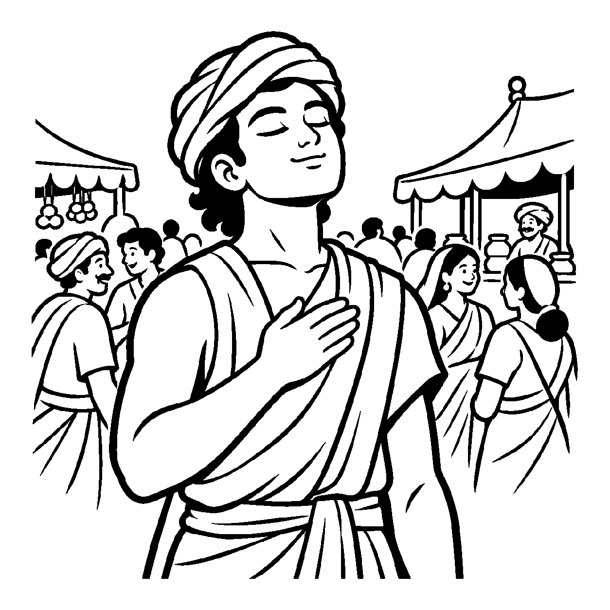

આકાશમાં અબજો તારાઓના ઝૂમખાં ચમકતાં હોય, છતાં ઉત્તર દિશામાં સ્થિર રહેલો એક જ ધ્રુવતારો પોતાની અનોખી સ્વતંત્ર આભાથી દિશા બતાવે છે. સમૂહના મહાસાગરમાંથી બહાર આવીને જ્યારે કેવળ એક જ અખંડ, સ્વતંત્ર વ્યક્તિગત દ્રવ્ય — જેમ કે એક આત્મા કે એક પરમાણુ — નું વાણીમાં નિર્દોષ પ્રતિપાદન કરવામાં આવે, ત્યારે તે 'અંતિમ અખંડ વ્યવહારનય દ્રવ્યાર્થિક પ્રતિપાદક વ્યવહાર' બને છે.
સંગ્રહ નયનો પ્રારંભ સમગ્ર બ્રહ્માંડના 'સત્' થી થયો હતો. ધીમે ધીમે તે જીવ, મુક્ત-સંસારી અને સૂક્ષ્મ સ્કંધો સુધી ઊતર્યો. હવે સંગ્રહ ખંડના આ અંતિમ ચરણમાં, નય-દ્રષ્ટિ સમૂહવાદને પૂર્ણ કરી વ્યક્તિગત અખંડ દ્રવ્યની સ્થાપના કરે છે. આ નય વ્યવહારની ભાષામાં ઘોષણા કરે છે કે "પ્રત્યેક જીવ પોતાનું સ્વતંત્ર, અખંડ અને પરિપૂર્ણ અસ્તિત્વ ધરાવે છે."
આ નય સાધકને ટોળામાંથી મુક્ત કરીને સ્વતંત્રતાનો અહેસાસ કરાવે છે. તે સમજાવે છે કે તારું સુખ-દુઃખ અન્ય કોઈ પર નિર્ભર નથી; તું સ્વયં એક અખંડ, અવિનાશી ચૈતન્ય-રાજા છે.
સમૂહ તણા ભેદો ત્યજી, એક દ્રવ્ય અખંડ;
અંતિમ વ્યવહારે પ્રગટે, આતમ તેજ પ્રચંડ.

યુવાન શ્રેષ્ઠી વર્ધમાન પોતાની નગરીના વિશાળ મેળામાં ગયો હતો. ચારે તરફ હજારો લોકોનો કોલાહલ, સંગીત અને આનંદ-પ્રમોદ ચાલતો હતો. પરંતુ વર્ધમાનના અંતરમાં એક વિચિત્ર એકલતા અને ભય ઘેરાઈ રહ્યો હતો. તેણે વિચાર્યું: "હું પરિવારમાં રહું છું, સમાજમાં જીવું છું અને આટલી મોટી ભીડ વચ્ચે ઊભો છું, છતાં હું ભીતરમાં આટલો અસહાય અને ખાલીપો કેમ અનુભવું છું? શું મારું કોઈ સ્વતંત્ર અસ્તિત્વ છે ખરું કે પછી હું કેવળ આ ટોળાનો જ એક અંશ છું?" સંબંધો, જ્ઞાતિ અને સમૂહના વમળોમાં અટવાઈને તે પોતાનું સાચું સ્વરૂપ ભૂલી ગયો હતો. કોઈ આંતરિક આધાર ન મળતાં તે મેળાની ભીડ વચ્ચે જ સ્તબ્ધ બનીને ઊભો રહી ગયો: "આ ભીડમાંથી મારા આત્માની સ્વતંત્ર ઓળખ ક્યાંથી પ્રગટશે?"
તે જ ક્ષણે મેળાના એક ખૂણે બિરાજમાન એક પરમ શાંત જૈન સાધુએ વર્ધમાનને પોતાની પાસે બોલાવ્યો અને તેના નેત્રોમાં ઊંડાણપૂર્વક નિહાળીને કહ્યું, "વત્સ, અંતિમ અખંડ વ્યવહારનયને ઓળખ. આ જગતનો મેળો અને પરિવાર ભલે સમૂહરૂપે દેખાય, પણ તું સ્વયં એક અખંડ, પરિપૂર્ણ અને સ્વતંત્ર આત્મા છે! અનંત જીવોની વચ્ચે પણ તારું જ્ઞાન, તારું સુખ અને તારો મોક્ષ કેવળ તારો જ છે. તું કોઈનો ઓશિયાળો નથી." સાધુના આ અખંડ એકત્વના દિવ્ય બોધામૃતનું પાન કરતાં જ વર્ધમાનના ભીતરમાંથી એકલતાનો ભય ઓગળી ગયો. ભીડ વચ્ચે પણ તેને પોતાના અખંડ સ્વરૂપનો શાશ્વત સધિયારો મળી ગયો અને તેના ચહેરા પર પરમ શાંતિનું સ્મિત છવાઈ ગયું.
જો આ નય કદાગ્રહી બને, તો મનુષ્ય સામાજિક જવાબદારીઓ, ગુરુ-પરંપરા અને પરોપકારનો ત્યાગ કરીને સ્વકેન્દ્રી અને અહંકારી બની જાય છે. આવી એકાંત જડતાથી જીવ વર્તમાન વ્યવહારિક સાધના અને કર્તવ્યોની ઉપેક્ષા કરી બેસે છે અને ક્રમિક પરિણામોને સુધાર્યા વિના અકાળે પૂર્ણતાના મિથ્યા સંતોષમાં રાચે છે.
આ જ નય જ્યારે સમન્વયશીલ બને છે, ત્યારે તે સાધકમાં પરમ સ્વાવલંબન અને 'એકત્વ ભાવના' જગાડે છે. તે પર-આશ્રય છોડાવીને સાધકને મોક્ષના એકાંત સાધના-પથ પર અડગપણે પ્રયાણ કરવાનું દિવ્ય બળ આપે છે.